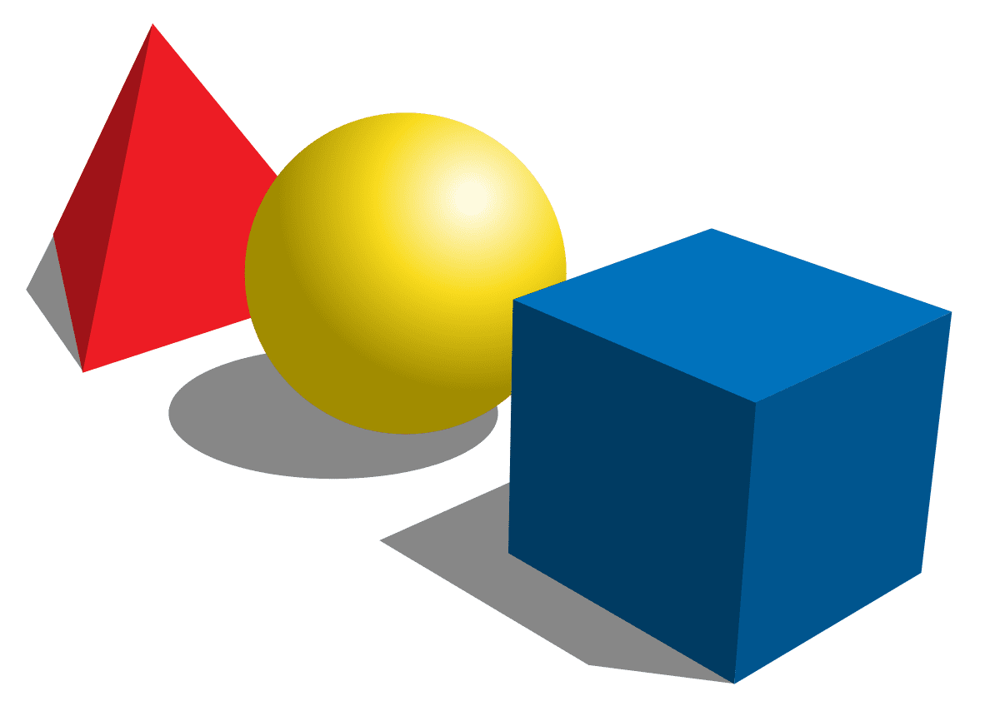
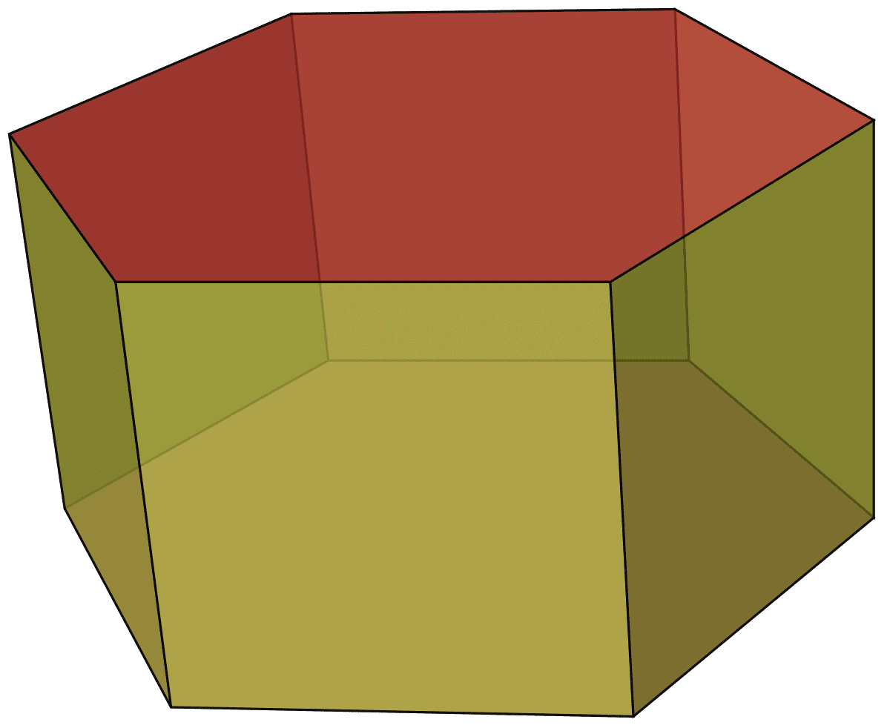
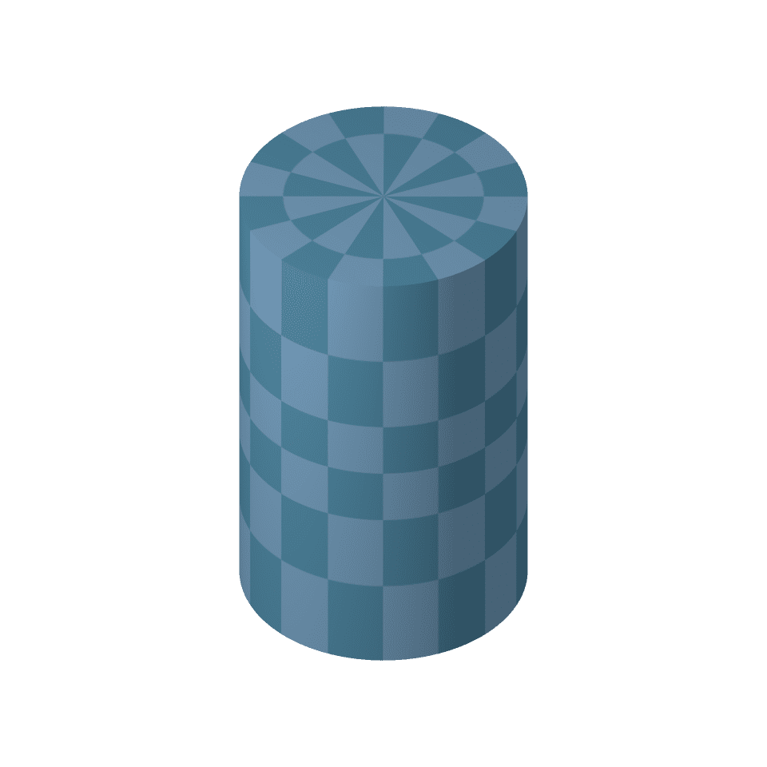
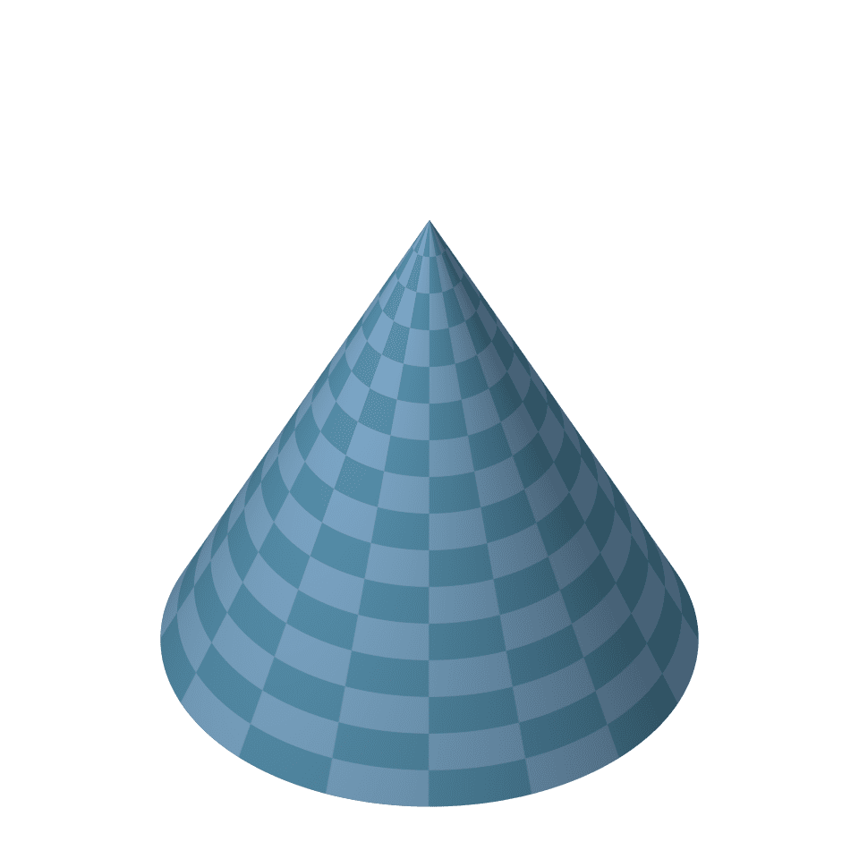
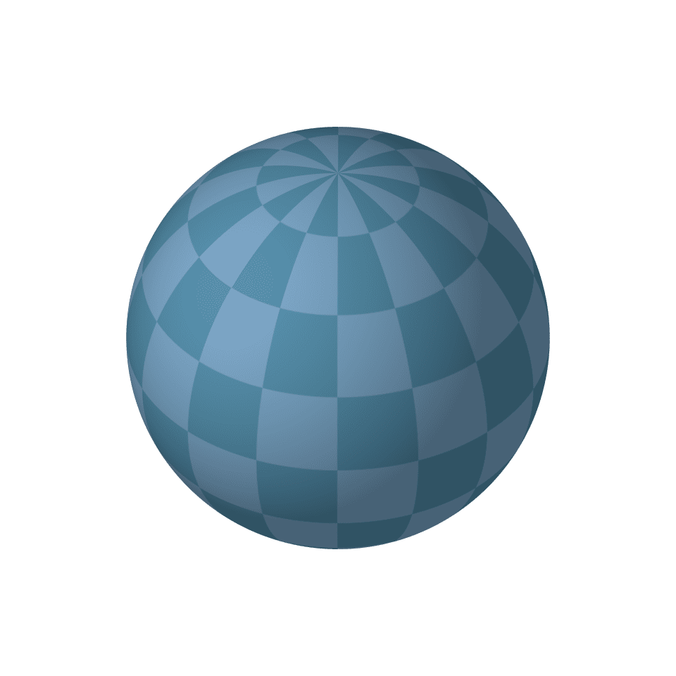
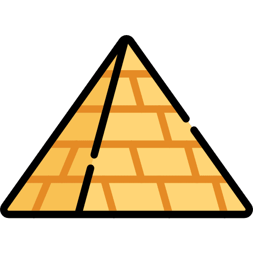

Geometria Espacial
A geometria espacial é a análise de sólidos no espaço, ou seja, é a geometria para objetos tridimensionais, diferente da geometria plana, que é o estudo de figuras bidimensionais. Assim como esta, aquela surge com base em conceitos primitivos, sendo eles: ponto, reta, plano e espaço.
Poliedros mais comuns
Prisma
Um prisma é o sólido geométrico formado pela união de todos os segmentos de reta congruentes e paralelos a um segmento dado, com uma extremidade nos pontos de um polígono fixo não paralelo a esse. Ou seja, um prisma é um poliedro com duas faces congruentes e paralelas e cujas demais faces são paralelogramos.
Cilíndro
Em Geometria, um cilindro é o objeto tridimensional[1] delimitado pela superfície de translação completa de um segmento de reta que se move paralelamente a si mesmo, e se apoia em uma circunferência. De maneira mais prática, o cilindro é um corpo alongado e de aspecto redondo, com o mesmo diâmetro ao longo de todo o comprimento. Ao considerar-se um prisma de base regular, e fazer o número de lados/vértices da base tender ao infinito, o prisma tenderá a um cilindro.
Cone
Em geometria, o cone é um sólido geométrico obtido quando se tem uma pirâmide cuja base é um polígono regular, o número de lados da base tende ao infinito e a medida de lado do polígono tende a zero.
Esfera
A esfera pode ser definida como "uma sequência de pontos alinhados em todos os sentidos à mesma distância de um centro comum". É tida também como um sólido geométrico formado por uma superfície curva contínua, cujos pontos estão equidistantes de um outro fixo e interior, chamado centro, ou seja: é uma superfície fechada de tal forma que todos os pontos dela estão à mesma distância de seu centro; ou ainda: de qualquer ponto de vista de sua superfície, a distância ao centro é a mesma. A esfera pode ser obtida através do movimento de rotação de um semicírculo em torno de seu diâmetro.
Pirâmide
Uma pirâmide é um sólido geométrico formado pela reunião dos segmentos de reta com uma extremidade em um ponto fixo V e outra num polígono dado sobre um plano fixo \alpha que não contém V. Como exemplos das pirâmides da geometria espacial temos as pirâmides do Egito, uma das sete maravilhas do mundo antigo.
Todos direitos reservados

Copyright © 2022